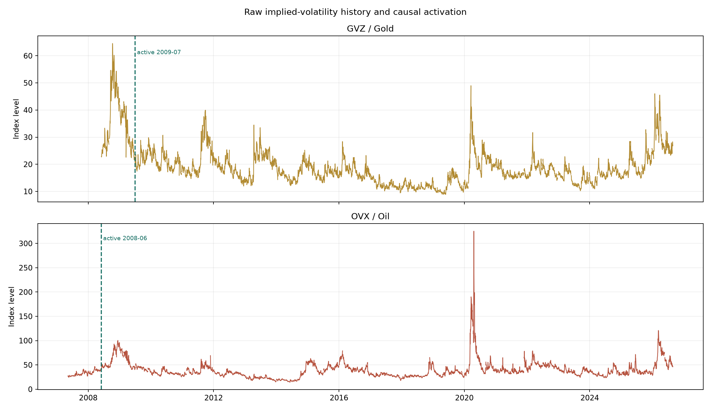
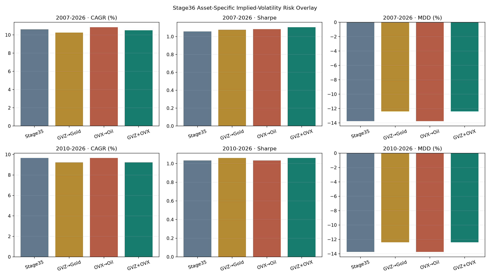
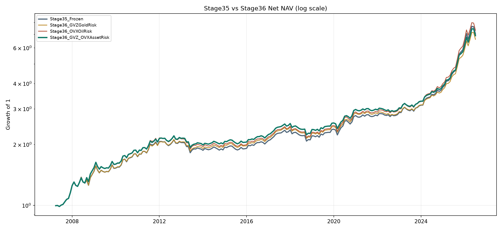

1. 한 페이지 요약
Stage36의 핵심은 “공포가 높으니 금·원유가 떨어질 것”이라고 예측하는 데 있지 않다. 옵션시장이 해당 자산의 미래 변동성을 비싸게 평가할 때, 동일한 기대수익을 가진 자산이라도 최적화에서 더 많은 위험예산을 쓰는 것으로 처리하는 방법이다.
GLD 공분산 축만 확대한다. GLD 기대수익에는 0을 더한다.
USO 공분산 축만 확대한다. USO 기대수익에는 0을 더한다.
기대수익·위험·하방위험·비용을 함께 보고 월별 장기전용 비중을 결정한다.
2. Stage36의 정확한 경계
Stage36은 Stage35를 다시 학습하거나 국면 분류 방식을 바꾸지 않는다. 실제 코드가 먼저 Stage35의 기대수익 벡터와 공분산 행렬을 재구성한 뒤, 마지막에 자산별 내재변동성 행렬을 한 번 더 곱한다.
- GVZ/OVX FRED 형식 CSV 로더
- 252개 과거관측 이후의 인과적 순위
- GLD·USO 전용 분산 배수
- 자기자산 미래 위험 회귀
- GVZ-only, OVX-only, 결합 ablation
- 거시 확률과 조건부 모멘트
- VKOSPI/VIX6 스트레스
- ATR·K-ratio·RSI 기술 신호
- EPS·밸류에이션·신용 위험
- SLSQP 목적함수·비용·위험제약
3. 전체 처리 구조
- 월 t가 시작되기 전에 t-1 월말까지 공개된 값만 고른다.
- 과거 월 수익률과 거시 확률을 이용해 Stage35의 조건부 μ와 Σ를 계산한다.
- 기술 신호, 펀더멘털, 신용위험을 Stage35 방식으로 반영한다.
- GVZ 순위는 GLD, OVX 순위는 USO 공분산 축에만 추가한다.
- SLSQP가 완전투자·무레버리지·변동성·CDaR 제약 아래 비중을 푼다.
- 실제 당월 자산수익을 적용하고 국내 매매비용과 해외비중 환전비용을 차감한다.
- 월말 가격변동으로 비중이 떠밀린 상태를 다음 달의 사전비중으로 넘긴다.
4. 입력변수 전체 목록
아래 표는 Stage36에 직접 추가된 입력과 Stage35에서 상속되어 실제 비중 결정에 들어가는 입력을 구분한다. 미래위험 회귀의 목적변수는 거래 입력이 아니라 사후 검증 변수다.
| 층 | 입력변수 | 가공 | 실제 역할 |
|---|---|---|---|
| Stage36 직접 | GVZCLS | 과거 대비 expanding midrank, 252개 이전 중립 | GLD 분산·공분산 축 확대 |
| Stage36 직접 | OVXCLS | 과거 대비 expanding midrank, 252개 이전 중립 | USO 분산·공분산 축 확대 |
| 거시 성장축 | GDP YoY, 수출 YoY, BSI | 각각 인과적 백분위 후 동일가중 평균 | 성장 확률 gt |
| 거시 물가축 | CPI YoY, PPI YoY, 수입물가 YoY | 각각 인과적 백분위 후 동일가중 평균 | 물가 확률 πt |
| 거시 국면 | Goldilocks, Overheating, Slowdown, Stagflation | g와 π의 곱으로 네 확률 생성 | 과거 수익의 국면별 가중치 |
| 스트레스 | VKOSPI 수준, 5일 로그변화 | 인과적 순위 | 단기 공포 수준·충격 |
| VIX6 | parallel shift, put/call skew, downside/upside convexity | 왼쪽 충격·꼬리 비대칭·지속성 블록 | stress score와 recovery score |
| 기술 방향 | 126일 K-ratio, K-score | K/(1+|K|) | 거시 상대 기대수익의 신뢰도 조절 |
| 주식 기술 | 14일 price RSI, volume RSI | [-1,1] 강도, K-score와 동일가중 | KODEX200 기술 방향 |
| 기술 위험 | 14일 ATR/가격(NATR) | 인과적 순위, 1+rank | 모든 자산의 현재 위험축 조정 |
| 이익 | 12개월 선행 EPS, 1개월 EPS revision | 60개월 causal z·비음수 expanding slope | KODEX200 μ 조정 |
| 밸류에이션 | 12개월 선행 PER, 국고채 10년 | 1/PER−10년금리, 12개월 수익에 인과 보정 | KODEX200 장기 μ 조정 |
| 신용 위험 | AA- 회사채 3년−국고채 3년, 20일 변화 | 60개월 순위·z-score | 주식 stress μ와 공분산 축 확인 |
| 상태 | 직전 보유비중, 과거 4자산 월수익 | 가격변동 후 사전비중·하방반분산·CDaR | 비용·위험·초기점 계산 |
5. 경제적 아이디어
5.1 내재변동성은 방향보다 ‘보험 가격’에 가깝다
GVZ와 OVX에는 위험중립 기대분산과 변동성 위험프리미엄이 함께 들어 있다. 값이 높다는 것은 시장참여자가 큰 움직임에 더 높은 보험료를 지불한다는 뜻이지만, 다음 달 수익률의 부호를 자동으로 뜻하지는 않는다. 공포가 높을 때 반등할 수도 있고 추가 하락할 수도 있기 때문이다.
그래서 Stage36은 μ_GLD와 μ_USO를 깎지 않는다. 대신 같은 기대수익을 얻기 위해 감수해야 하는 불확실성이 커졌다고 보고 위험행렬만 조정한다. 이는 “방향 예측”보다 “위험예산 조절”이라는 정보의 성격에 더 맞다.
5.2 왜 VIX6와 별도로 필요한가
VKOSPI/VIX6는 한국 주식시장과 KOSPI200 옵션 표면에서 읽은 전체 스트레스다. GVZ는 금, OVX는 원유 옵션시장의 자기자산 위험이다. 실제 검증에서도 자기자산 최근 수익률·21일 실현변동성·VIX6 스트레스·거시 취약도를 통제한 뒤 GVZ와 OVX가 각각 GLD와 USO 미래 위험에 추가 설명력을 가지는지 확인했다.
5.3 위험예산이 이동하는 경로
GVZ가 높아지면 GLD의 μ는 같지만 σ와 다른 자산과의 공분산이 커진다. 최적화 입장에서는 GLD의 한 단위 기대수익을 얻는 데 필요한 위험비용이 올라간다. 제약이 걸리거나 분산 패널티가 커지면서 일부 비중이 BOND 등으로 이동한다. 실제 전체기간 평균 GLD 비중은 34.47%에서 30.02%로 줄고 BOND는 40.07%에서 44.90%로 늘었다.
6. 인과적 순위 변환의 원리
GVZ와 OVX는 지수 수준과 역사적 분포가 다르다. 임의의 z-score 창이나 절대 임계값 대신, 현재 값이 그 시점까지의 자기 역사에서 어느 위치인지 empirical CDF의 midrank로 바꾼다.
- 인과성: 현재 값은 현재보다 앞선 값과만 비교된다. 미래 평균과 미래 표준편차를 사용하지 않는다.
- 척도 불변성: GVZ 20과 OVX 40처럼 수준이 달라도 0~1의 역사적 위치로 비교할 수 있다.
- 이상치 내성: 극단값이 배수를 무한히 키우지 않는다. 최종 분산 배수는 1~2에 갇힌다.
- 무튜닝: rolling window, decay, winsorization 경계, sigmoid 기울기를 탐색하지 않는다.
단, 순위가 존재하더라도 prior_count < 252이면 신호를 비활성화한다. 252는 약 한 거래연도라는 경제적 표본 단위다. 출시 전 구간을 평균이나 실현변동성으로 채우지 않는다.
def _rank_after_prior_history(series): rank = stage35.causal_expanding_midrank(series) prior_count = series.notna().shift(1).fillna(False).astype(int).cumsum() return rank.where(prior_count >= 252), prior_count
7. 월간 시점 정렬과 look-ahead 방지
예를 들어 2020년 4월 비중을 결정할 때 2020년 3월 말까지의 마지막 GVZ/OVX만 사용한다. 4월 중에 발표된 값이나 4월 수익률은 볼 수 없다.
signal_month = target_month - 1을 만든다.month_end = signal_month.to_timestamp("M")으로 사용 가능 마감일을 고정한다.daily.loc[:month_end]에서 마지막 유효 관측을 선택한다.- 그 관측일의 rank와 prior count가 모두 유효해야 오버레이가 활성화된다.
- GVZ는 2009-07 목표월, OVX는 2008-06 목표월부터 활성화됐다.

8. Stage35에서 물려받은 기대수익·위험 엔진
Stage36 파일만 보면 μ가 어디서 오는지 알기 어렵다. 아래 과정은 모두 Stage35와 그 하위 모듈에서 계산된 뒤 Stage36으로 전달된다.
8.1 무학습 거시 국면 확률
성장 확률 g는 GDP·수출·BSI 인과적 백분위의 평균이고, 물가 확률 π는 CPI·PPI·수입물가 백분위의 평균이다. 네 국면 확률은 두 연속축의 곱으로 계산된다.
네 값의 합은 항상 1이다. 하드 국면을 하나 고르지 않고 모든 과거 월이 각 국면에 속할 확률을 가중치로 가진다.
8.2 국면 조건부 모멘트와 shrinkage
국면 k의 과거 확률을 월수익 가중치로 써서 평균 μ̃k와 공분산 Σ̃k를 구한다. 유효표본이 작을 때 불안정해지는 것을 줄이기 위해 12개월짜리 명시적 사전표본으로 무조건부 모멘트에 수축한다.
8.3 VKOSPI/VIX6 연속 스트레스
VKOSPI 수준, VKOSPI·VIX6 충격, 왼쪽 꼬리 비대칭, 21일 지속성을 동일한 블록으로 합친 0~1 stress score를 쓴다. 국면별 스트레스·회복 OLS 기울기에 자기 R²를 신뢰도 가중치로 곱한다. 주식과 원유는 스트레스 β≤0, 회복 β≥0이라는 고정 경제부호를 둔다.
8.4 기술 신호
거시 μ가 자산 횡단면 평균보다 높은지 낮은지와 기술 방향의 부호가 일치할수록 상대 기대수익을 더 신뢰한다. ATR 백분위는 각 자산 공분산 축을 1~2배로 조절한다.
8.5 EPS·밸류에이션·신용
1개월 EPS revision과 earnings-yield gap은 과거수익과의 비음수 expanding slope로 KODEX200 μ에 연결된다. AA- 신용스프레드 확대는 주식 stress μ를 확인하고 주식 공분산 축을 확대한다. Stage36은 이 계산을 변경하지 않는다.
9. Stage36 공분산 오버레이의 수학
9.1 분산 배수
자산 순서는 [KODEX200, BOND, GLD, USO]다. q는 0~1이므로 m은 1~2다. 비활성 기간에는 m=1이어서 Stage35와 정확히 같다.
9.2 각 행렬 원소에 미치는 효과
- GLD 분산: Var(GLD)* = mG Var(GLD)
- USO 분산: Var(USO)* = mO Var(USO)
- GLD와 다른 자산 공분산: Cov(GLD,j)* = √mG Cov(GLD,j)
- GLD–USO 공분산: Cov(GLD,USO)* = √(mGmO) Cov(GLD,USO)
이 변환은 상관계수 자체는 바꾸지 않고 자산의 변동성 척도만 바꾼다. 또한 기존 Σ가 positive semidefinite라면 임의 벡터 z에 대해 z′DΣDz=(Dz)′Σ(Dz)≥0이므로 변환 후에도 PSD가 보존된다. 임의로 대각원소만 늘리는 방식보다 수학적으로 일관적이다.
9.3 숫자 예시
GVZ 순위가 0.80, OVX 순위가 0.60이면 mG=1.80, mO=1.60이다. GLD 표준편차는 √1.8≈1.342배, USO 표준편차는 √1.6≈1.265배로 평가된다. GLD 기대수익은 그대로이므로 최적화상 GLD의 위험 대비 매력은 낮아진다.
10. SLSQP 목적함수와 원리
SLSQP(Sequential Least Squares Programming)는 등식·부등식·상하한을 함께 다룰 수 있는 연속 비선형 최적화 알고리즘이다. Stage36에서 SLSQP가 국면을 분류하거나 미래를 학습하는 것은 아니다. 이미 계산된 μ와 Σ, 과거수익, 사전비중을 받아 4개 자산 비중을 푼다.
추정 월 기대수익 보상. 높을수록 비중을 늘릴 유인이 생긴다.
월 분산 패널티. log-growth의 2차 근사 μ−σ²/2와 같은 구조다.
과거 포트폴리오 수익 중 음수 부분만 제곱해 추가로 벌점을 준다.
현재 목표비중과 가격변동 후 사전비중의 차이에 실제 비용률을 적용한다.
이 목적함수는 CAGR을 직접 최대화하는 완전한 다기간 문제는 아니다. 월별 log-growth 근사와 하방위험, 비용을 함께 최적화한다. 따라서 Sharpe와 MDD 개선 가능성은 있지만 CAGR이 반드시 높아지는 구조는 아니다. 실제 Stage36 결과도 이 특징을 그대로 보여준다.
10.1 SLSQP가 반복하는 일
- 현재 비중 근처에서 목적함수와 제약을 국소적으로 근사한다.
- 선형화한 제약을 만족하는 quadratic subproblem을 푼다.
- 비중을 갱신하고 목적함수·제약 위반을 다시 평가한다.
- 변화가
ftol=1e-9이내가 되거나 최대 300회에 도달할 때까지 반복한다.
11. 투자·위험 제약
- 완전투자: 현금 자산 없이 네 자산 비중의 합이 1이다.
- 무레버리지·공매도 금지: 모든 비중은 0~100%다.
- 단일자산 과반금지 해제: 별도의 50% 상한은 없다. 이론상 한 자산 100%가 가능하다.
- 13% 변동성 guard: 정상 목표변동성이라기보다 재난 수준 위험을 막는 상한이다.
- -16% CDaR guard: 역사적 누적 NAV drawdown 중 최악 10%의 평균이 -16%보다 나쁘지 않아야 한다.
최종 결합경로 232개월 모두 1차 SLSQP가 성공했고 fallback은 한 번도 사용되지 않았다. 변동성 guard는 106개월, CDaR guard는 3개월에서 사실상 결합했다.
12. 거래비용과 가격변동 후 사전비중
이전 목표비중을 그대로 다음 달의 출발점으로 쓰지 않는다. 한 달 동안 자산가격이 변하면 매매하지 않아도 비중이 변한다.
다음 최적화는 새 목표비중과 이 사전비중의 차이에 비용을 부과한다.
첫 항은 모든 자산 비중 변화에 적용되는 15bp 비용이고, 두 번째 항은 해외자산 순비중 변화에 적용되는 추가 5bp 환전비용이다. 최적화 내부에서는 절댓값을 매끄럽게 만들기 위해 √(Δw²+10−12)를 사용하고, 실현 백테스트에서는 실제 절댓값을 차감한다.
13. 월별 백테스트 알고리즘
for month in 2007-04 ... 2026-07: history = returns[date < month] # 현재 월 제외 p_macro = macro_probabilities[month] # 직전 월까지 정보 stress, recovery = stress_signals[month] technical = technical_signals[month] fundamental = fundamental_signals[month] gvz_ovx = asset_vol_signals[month] mu35, sigma35 = build_stage35_moments(...) D = diag(1, 1, sqrt(1 + q_gvz), sqrt(1 + q_ovx)) mu36 = mu35 sigma36 = D @ sigma35 @ D weights = SLSQP(mu36, sigma36, history, pretrade) gross = weights @ realized_asset_return[month] net = gross - domestic_cost - fx_cost nav *= 1 + net pretrade = drifted_weights(weights, realized_asset_return[month])
첫 실행에서는 동일비중이 초기점이다. 이후에는 직전 월의 가격변동 후 비중을 simplex에 투영해 초기점으로 사용한다. 주 목적함수 풀이가 실패하면 같은 제약 아래 최소분산 문제로 fallback하지만, 검증 결과 네 비교경로 모두 fallback 0회였다.
14. 검증 설계와 채택 기준
14.1 네 경로를 같은 조건에서 비교
Stage36_NoOverlayReproduction: 배수 1로 Stage35를 재현Stage36_GVZGoldRisk: GVZ→GLD만 사용Stage36_OVXOilRisk: OVX→USO만 사용Stage36_GVZ_OVXAssetRisk: 두 위험축을 함께 사용한 사전 지정 최종 후보
단독 경로는 attribution을 위한 ablation이다. 네 결과 중 사후에 가장 좋은 한 개를 고르는 방식이 아니다.
14.2 위험 메커니즘 회귀
통제변수는 자기자산 최근 1개월 수익, 21일 실현변동성, VIX6 stress, 거시 취약도다. 표준화된 β, HAC p-value, Spearman IC를 보고 센서가 자기자산 미래위험에 추가 정보를 주는지 확인한다.
14.3 12개월 paired circular block bootstrap
Stage35와 Stage36의 같은 월을 한 쌍으로 묶고 12개월 블록을 2,000회 재표집한다. 시계열 군집을 완전히 섞지 않으면서 CAGR·Sharpe·MDD 차이의 불확실성을 본다.
14.4 코드에 고정된 승격 게이트
- 전체 CAGR≥10%, Sharpe가 Stage35보다 낮지 않음, MDD가 악화되지 않음
- 2010 공통구간 Sharpe·MDD 개선, CAGR 감소폭≤0.50%p
- GVZ와 OVX의 주요 미래위험 β가 모두 양수이고 최소 하나는 HAC p<0.10
- 공통구간 bootstrap에서 Sharpe 개선확률≥60%, MDD 개선확률≥50%
15. 실제 성과와 불확실성
| 전략·구간 | CAGR | Vol | Sharpe | Sortino | MDD | Calmar |
|---|---|---|---|---|---|---|
| Stage35 · 2007~2026 | 10.608% | 10.043% | 1.057 | 2.067 | -13.743% | 0.772 |
| Stage36 결합 · 2007~2026 | 10.499% | 9.472% | 1.105 | 2.202 | -12.407% | 0.846 |
| Stage35 · 2010~2026 | 9.653% | 9.371% | 1.033 | 2.014 | -13.743% | 0.702 |
| Stage36 결합 · 2010~2026 | 9.232% | 8.719% | 1.059 | 2.049 | -12.407% | 0.744 |
| Stage35 · 2018~2026 | 13.821% | 10.861% | 1.251 | 2.634 | -11.984% | 1.153 |
| Stage36 결합 · 2018~2026 | 12.626% | 10.178% | 1.224 | 2.538 | -11.931% | 1.058 |

15.1 결합경로의 bootstrap
| 구간 | 지표 | 평균 차이 | 5% | 중앙값 | 95% | P(개선) |
|---|---|---|---|---|---|---|
| 전체 | CAGR | -0.122%p | -0.816%p | -0.104%p | +0.535%p | 39.20% |
| 전체 | Sharpe | +0.048 | +0.006 | +0.048 | +0.092 | 97.15% |
| 전체 | MDD | +1.074%p | 0.000%p | +1.020%p | +2.461%p | 95.10% |
| 2010 공통 | CAGR | -0.433%p | -1.127%p | -0.406%p | +0.141%p | 12.10% |
| 2010 공통 | Sharpe | +0.029 | -0.013 | +0.030 | +0.069 | 86.85% |
| 2010 공통 | MDD | +0.921%p | -0.138%p | +0.928%p | +2.213%p | 93.30% |

16. 어떤 메커니즘으로 효과가 났나
16.1 평균비중 변화
| 자산 | Stage35 평균 | Stage36 평균 | 변화 |
|---|---|---|---|
| KODEX200 | 25.102% | 24.891% | -0.212%p |
| BOND | 40.073% | 44.905% | +4.832%p |
| GLD | 34.473% | 30.021% | -4.452%p |
| USO | 0.351% | 0.183% | -0.168%p |
핵심은 GVZ가 높은 구간의 GLD 위험비용을 높여 약 4.45%p를 줄이고 대부분을 BOND로 이동시킨 것이다. USO는 원래 평균비중이 0.35%로 작아서 OVX의 통계적 위험 설명력이 좋아도 2010 이후 포트폴리오 효과는 거의 없다.
16.2 자기자산 미래위험 회귀
| 센서 | 목적변수 | 표준화 β | HAC p | Spearman IC |
|---|---|---|---|---|
| GVZ | GLD 향후 1M 실현변동성 | +0.01955 | 0.0029 | +0.492 |
| GVZ | GLD 향후 1M MDD 크기 | +0.00733 | 0.0014 | +0.411 |
| GVZ | GLD 향후 3M MDD 크기 | +0.00931 | 0.0871 | +0.398 |
| OVX | USO 향후 1M 실현변동성 | +0.04984 | 0.0010 | +0.588 |
| OVX | USO 향후 1M MDD 크기 | +0.01281 | 0.0977 | +0.261 |
| OVX | USO 향후 3M MDD 크기 | +0.02322 | 0.0369 | +0.170 |
여기서 최대낙폭 목적변수는 음의 drawdown 자체가 아니라 낙폭의 크기로 구성되어 양의 β가 “앞으로 위험이 커진다”는 의미다. 이 회귀는 위험 오버레이의 경제적 정당성을 검사할 뿐 비중 공식의 계수로 사용되지 않는다.
17. Stage36에서 의도적으로 사용하지 않은 기법
GVZ가 높다고 GLD μ를 낮추거나, 공포프리미엄 반등을 이유로 높이지 않는다.
GVZ 20·30·40, 상위 10% 등 여러 문턱을 돌려 고르지 않는다.
60·126·252·756일 중 최적 구간을 찾지 않는다. 252 prior는 한 거래연도다.
GVZ 이전을 금 실현변동성이나 다른 VIX로 이어 붙이지 않는다.
비중합 1, 각 비중 0~1이다. 목표 변동성을 맞추기 위한 차입도 없다.
Stage36 자체에는 국면모델 학습·클러스터링이 없다.
위험회귀 결과가 약하다고 수익률 알파로 용도를 바꾸지 않는다.
OVX 효과를 키우려고 원유를 억지로 보유하지 않는다.
18. 한계와 올바른 해석
- 최근구간 약화: 2018 이후 CAGR과 Sharpe는 Stage35보다 낮았다. 방어적 선택의 기회비용이다.
- 원화 수익률과 달러 옵션지수: GLD·USO 수익은 원화 환산인데 GVZ·OVX는 달러표시 기초자산 옵션시장이다. 환율효과가 완전히 분리되지 않는다.
- vintage: 관측일은 통제하지만 FRED 실시간 vintage와 장중 배포시각까지 재현하지 않는다.
- 월말 백테스트: 일중 MDD·호가·세금·시장충격을 반영하지 않는다.
- Sharpe 정의: 월평균/월표준편차×√12이며 별도 무위험수익률을 빼지 않는다.
- 연구 누적: 이전 Stage 결과를 본 뒤 개발된 경로이므로 전체 2007~2026을 깨끗한 최초 홀드아웃으로 볼 수 없다.
- 상관구조: DΣD는 기존 상관을 유지한다. 스트레스 시 상관 급등까지 별도로 모델링하지 않는다.
19. 전체 구현을 보려면 어느 소스코드를 읽어야 하나
Stage36 파일 하나에는 오버레이와 실행 조립이 들어 있지만, μ·Σ의 기원과 위험제약까지 완전히 이해하려면 아래 순서가 가장 빠르다.
19.1 최소 이해 경로
stage36_asset_implied_volatility_risk/asset_implied_volatility_risk_slsqp.py
핵심 GVZ/OVX 로드, 월 정렬, DΣD, SLSQP, 백테스트, 검증 게이트.stage35_earnings_credit_fundamentals/earnings_credit_fundamentals_slsqp.py
기준전략 EPS·밸류에이션·신용위험과 Stage35 기대수익 조립.stage13_conditional_moments_slsqp/economic_conditional_slsqp.py
수학 인과적 midrank, VKOSPI/VIX6 stress, 국면 조건부 평균·공분산.
19.2 완전한 의존 경로
19.3 검증 코드
tests/test_stage36_asset_implied_volatility_risk.py에서 원본 hash, 252 prior, 시점 인과성, μ=0, 분산배수 범위, 위험회귀, SLSQP feasibility, 성과 수치, bootstrap, HTML 완결성을 검사한다.
20. 함수별 코드 지도
| 파일 | 줄 | 함수 | 읽어야 하는 이유 |
|---|---|---|---|
| Stage36 | 78~134 | _load_fred_csv, load_asset_implied_volatility_daily | GVZ/OVX 정규화와 원본 감사 |
| Stage36 | 97~105 | _rank_after_prior_history | 252 prior와 causal rank |
| Stage36 | 136~185 | build_monthly_asset_volatility_signals | 직전 월말 정보만 쓰는 시점 정렬 |
| Stage36 | 198~292 | asset_risk_predictive_regressions | VIX6 통제 후 미래위험 진단 |
| Stage36 | 302~507 | _solve_weights | Stage35 μ·Σ 조립, DΣD, 목적함수와 제약 |
| Stage36 | 509~622 | run_backtest | 월별 손익·비용·사전비중 갱신 |
| Stage36 | 624~748 | _performance_table, gate_decision | 세 구간 성과와 승격 규칙 |
| Stage36 | 985~1283 | run_research | 전체 실행·저장·원본보존 검사 |
| Stage35 | 116~236 | load_fundamental_daily | EPS·PER·금리·신용 원자료 공식 |
| Stage35 | 248~319 | build_monthly_fundamental_signals | 60개월 causal z·신용 rank |
| Stage35 | 659~753 | add_causal_return_calibration | 비음수 expanding slope의 μ 매핑 |
| Stage13 | 70~91 | causal_expanding_midrank | Stage36 순위의 정확한 정의 |
| Stage13 | 116~270 | stress 함수들 | VKOSPI/VIX6 stress·recovery |
| Stage13 | 271~442 | estimate_conditional_moments | soft regime μ·Σ와 수축추정 |
| Stage20 | 277~427 | technical 함수들 | K-ratio·RSI 방향 및 ATR 위험 |
| Stage07 | 127~176 | build_macro_probabilities | 학습 없는 네 국면 확률 |
| Stage14 | 60, 95~126 | bounds·simplex·cost | 무레버리지와 거래비용 |
| Core | 350~355 | cdar | 최악 10% drawdown 평균 정의 |
21. 핵심 실제 구현 코드
아래는 설명용 의사코드가 아니라 Stage36 핵심 구현의 구조를 그대로 옮긴 발췌다. 전체 예외처리·감사 필드·저장 로직은 원본 Python 파일을 확인해야 한다.
21.1 월별 GVZ/OVX 신호
for target_month in target_months: signal_month = target_month - 1 month_end = signal_month.to_timestamp("M") for sensor, asset in (("gvz", "GLD"), ("ovx", "USO")): known = daily.loc[:month_end, [sensor, rank_col, count_col]].dropna(subset=[sensor]) current = known.iloc[-1] active = np.isfinite(current[rank_col]) and current[count_col] >= 252 multiplier = 1.0 + current[rank_col] if active else 1.0
21.2 기대수익은 그대로, 공분산만 변경
expected_return = filtered_macro + stress_adjustment covariance = np.asarray(technical["adjusted_covariance"], dtype=float) asset_scaling = np.eye(len(ASSETS), dtype=float) asset_scaling[GOLD_INDEX, GOLD_INDEX] = math.sqrt(gvz_multiplier) asset_scaling[OIL_INDEX, OIL_INDEX] = math.sqrt(ovx_multiplier) covariance = asset_scaling @ covariance @ asset_scaling gvz_mu_adjustment_GLD = 0.0 ovx_mu_adjustment_USO = 0.0
21.3 목적함수
def portfolio_values(weights): monthly_return = weights @ expected_return monthly_variance = weights @ covariance @ weights realized_history = historical_returns @ weights downside_semivariance = np.mean(np.minimum(realized_history, 0.0) ** 2) transaction_cost = stage35.expected_transaction_cost(weights, pretrade) utility = monthly_return - 0.5 * monthly_variance \ - downside_semivariance - transaction_cost return utility result = minimize( lambda w: -portfolio_values(w), initial, method="SLSQP", bounds=[(0.0, 1.0)] * 4, constraints=[sum_to_one, vol_not_above_13pct, cdar_not_below_minus_16pct] )
21.4 실행 전후 hash 감사
source_before = source_manifest() # GVZCLS.csv, OVXCLS.csv frozen_before = frozen_manifest() # Stage35 코드·월별 결과·검증 JSON ... source_after = source_manifest() frozen_after = frozen_manifest() checks["source_files_unchanged"] = source_before == source_after checks["stage35_frozen_files_unchanged"] = frozen_before == frozen_after
무오버레이 경로는 Stage35와 232개월 모두 일치했다. 최대 월수익 오차는 9.89×10−17, 최대 비중 오차는 9.71×10−17로 부동소수점 반올림 수준이다.
22. 실행 방법과 주요 산출물
22.1 프로젝트 루트에서 실행
& 'D:\Programming\python_example\Arcana\.venv-llama\Scripts\python.exe' ` -m strategies.stage36_asset_implied_volatility_risk.asset_implied_volatility_risk_slsqp
22.2 테스트
& 'D:\Programming\python_example\Arcana\.venv-llama\Scripts\python.exe' ` -m pytest -q tests\test_stage36_asset_implied_volatility_risk.py
22.3 산출물
| 파일 | 내용 |
|---|---|
outputs/normalized_gvz_ovx_daily.csv | 원자료 수준·rank·prior count |
outputs/monthly_asset_volatility_signals.csv | 목표월별 신호일·활성 여부·분산배수 |
outputs/stage36_gvz_ovxassetrisk_monthly.csv | 최종 월별 비중·수익·비용·제약 slack |
outputs/performance_comparison.csv | 전체·공통·잠금구간 성과 |
outputs/asset_risk_predictive_regressions.csv | 미래위험 HAC 회귀와 IC |
outputs/paired_block_bootstrap_vs_stage35.csv | 2,000회 paired block bootstrap |
outputs/validation_report.json | 설계·데이터·hash·solver·gate 전체 감사 |
stage36_gvz_ovx_report.html | 자동 생성 요약 보고서 |
_solve_weights, 전체 실행은 run_research, 결과의 진위와 원본보존은 outputs/validation_report.json, 자동 검증은 Stage36 테스트 파일을 보면 된다.